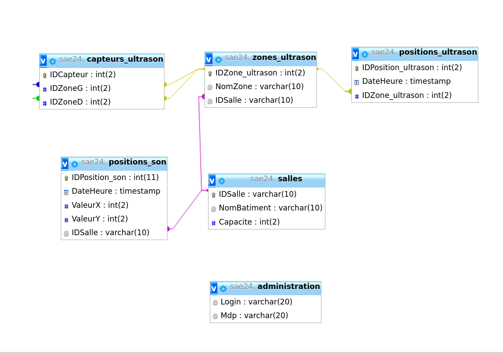

Outil collaboratif (GANTT)


J'ai réalisé le Gantt prévisionnel et final avec mon groupe puisque il a fallut savoir qui préférait faire quoi et où les personnes avaient le plus de faciliter, on a donc réparti les tâches tous ensemble. Pour ce Gantt, il était nécessaire de planifier le temps de réalisation de chaques tâches, mais aussi savoir qui va quelle tâche pour que l'on puisse mieux s'organiser étant donné qu'on est un groupe de 7 et qu'on peut être vite débordé.
Le plus compliqué dans la réalisation du GANTT a été le diagramme de ressource puisqu'il ne fallait pas que les membres du groupe soient sur trop de tâches en même temps et qu'il n'y est pas des membres à 150% et d'autres à 90%.
J'ai réalisé le Gantt prévisionnel et final avec mon groupe puisque il a fallut savoir qui préférait faire quoi et où les personnes avaient le plus de faciliter, on a donc réparti les tâches tous ensemble. Pour ce Gantt, il était nécessaire de planifier le temps de réalisation de chaques tâches, mais aussi savoir qui va quelle tâche pour que l'on puisse mieux s'organiser étant donné qu'on est un groupe de 7 et qu'on peut être vite débordé.
Le plus compliqué dans la réalisation du GANTT a été le diagramme de ressource puisqu'il ne fallait pas que les membres du groupe soient sur trop de tâches en même temps et qu'il n'y est pas des membres à 150% et d'autres à 90%.
J'ai réalisé le Gantt prévisionnel et final avec mon groupe puisque il a fallut savoir qui préférait faire quoi et où les personnes avaient le plus de faciliter, on a donc réparti les tâches tous ensemble. Pour ce Gantt, il était nécessaire de planifier le temps de réalisation de chaques tâches, mais aussi savoir qui va quelle tâche pour que l'on puisse mieux s'organiser étant donné qu'on est un groupe de 7 et qu'on peut être vite débordé.
Le plus compliqué dans la réalisation du GANTT a été le diagramme de ressource puisqu'il ne fallait pas que les membres du groupe soient sur trop de tâches en même temps et qu'il n'y est pas des membres à 150% et d'autres à 90%.
Dans le cadre du projet SAE24, j'ai participé activement au développement de la partie simulation sonore. J'ai notamment réalisé le script Python deplacement.py, qui simule le mouvement aléatoire d'un objet dans une pièce . Ce script calcule également les amplitudes sonores reçues par les différents microphones à chaque nouvelle position. En complément, j'ai développé le script_recu.sh pour récupérer les données (générer par le script précédent) sur le broker mqtt vers la base de données . J'ai également contribué à la réalisation de la cartographie des amplitudes sonores.
Au niveau des problèmes rencontrés, le plus important concerne les problèmes de connexion à la base de données. Je souhaitais principalement pouvoir, avec seulement le script "déplacement.py", envoyer directement les informations à la base de données.
Dans le cadre du projet SAE24, j'ai participé activement au développement de la partie simulation sonore. J'ai notamment réalisé le script Python deplacement.py, qui simule le mouvement aléatoire d'un objet dans une pièce . Ce script calcule également les amplitudes sonores reçues par les différents microphones à chaque nouvelle position. En complément, j'ai développé le script_recu.sh pour récupérer les données (générer par le script précédent) sur le broker mqtt vers la base de données . J'ai également contribué à la réalisation de la cartographie des amplitudes sonores.
Au niveau des problèmes rencontrés, le plus important concerne les problèmes de connexion à la base de données. Je souhaitais principalement pouvoir, avec seulement le script "déplacement.py", envoyer directement les informations à la base de données.
Lors de cette SAE, j'ai aidé mes camarades à faire le GANTT, j'ai aidé mon camarade Rémi à la conception de la base de données. Je me suis ensuite penché sur les pages PHP consultation son et ultrason, qui m'a pris beaucoup de temps. J'ai passé environ 44h sur ce projet de sae24.
J'ai eu de nombreux problèmes, car n'étant pas très à l'aise en PHP je me suis beaucoup documenté sur des forums qui ne m'ont pas toujours servis. La difficulté la plus importante pour moi, c'était à partir du cahier des charges imaginer comment faire pour le respecter. Et la gestion des tableaux avec les différentes valeurs
Durant cette SAE24, j'ai installé et configuré le serveur xampp, en y installant le nécessaire comme MySql, un serveur web (apache2), un serveur SSH pour se connecter à distance à la VM, python, php mysqli. J'ai également créé la base de données via phpMyAdmin avec l'aide de camarades. Pour finir j'ai réalisé les pages HTML du site web, notamment celle de l'accueil, de gestion de projet et de mentions légales. En ce qui concerne les heures passées sur ce projet, Je dirais environ 45h puisque deux vendredi je suis parti un peu plus tôt. Sinon à chaque séances en autonomie j'étais présent.
Mon plus gros problème a été la base données car n'y connaissant pas énormément en base données j'ai appris les fonctionnalités de base et comment me servir de php MyAdmin, j'ai demandé l'aide de mes camarades pour cette tâche.